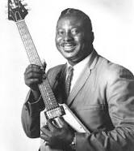

Estilo musical vocal e instrumental, basado en la utilización de notas de baja altura y
de un patrón repetitivo, que suele seguir una estructura de doce compases.
Estilo musical vocal e instrumental, basado en la utilización de notas de baja altura y
de un patrón repetitivo, que suele seguir una estructura de doce compases.En estados unidos se desarrolló en el folklore de las comunidades afroamericanas.
Estilo musical vocal e instrumental, basado en la utilización de notas de baja altura y
de un patrón repetitivo, que suele seguir una estructura de doce compases.
En estados unidos se desarrolló en el folklore de las comunidades afroamericanas.
 Albert King